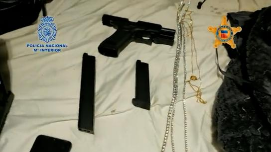
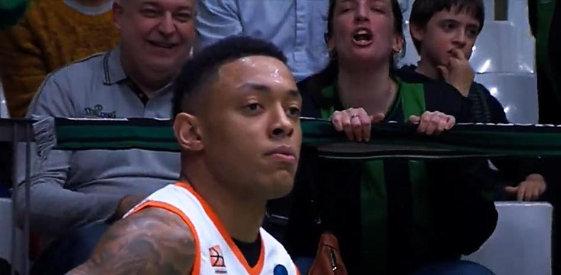
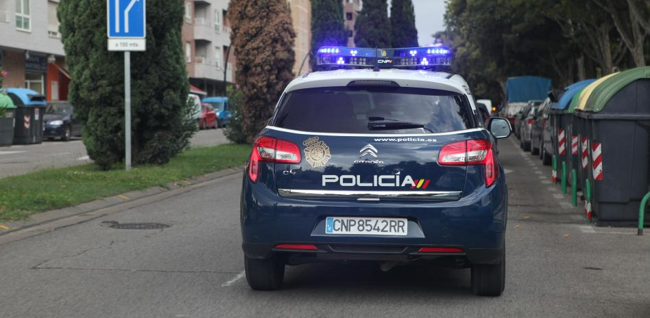

Sitios culturales de Barcelona
Museo de L'Hospitalet de Llobregat
Fira Barcelona | Gran Via
Como una ampliación futurista del recinto tradicional de Montjuïc, Fira Gran Via es la continuación moderna de Fira Barcelona y de una ciudad siempre emprendedora que camina hacia adelante en sus ambiciones de crecimiento.
Situada junto a L`Hospitalet de Llobregat y al aeropuerto, es una infraestructura de 240.000 metros cuadrados que se empezó a construir en el año 1995, cuando se hizo patente la necesidad de ampliar el recinto ferial de Montjuïc para que estuviera a la altura de las exigencias de los nuevos acontecimientos.
Leer más...
Museo Tecla Sala
El Centro Cultural Tecla Sala ocupa el espacio de una antigua fábrica textil, que fue adquirida por el Ayuntamiento de l’Hospitalet en 1982, para reconvertirla en un equipamiento cultural.
Este es un equipamiento promotor y difusor de las artes visuales, a partir de una programación contemporánea y un claro compromiso de servicio, abierto al conjunto de la población. Este equipamiento pertenece a la Red Pública de Espacios de Artes Visuales de Catalunya.
Leer más...
Museo de L'Hospitalet de Llobregat
Així, l’any 1972 s’inaugurava com a museu local. D’aleshores ençà, la seva creació ha permès que tots i totes puguem gaudir dels tresors de la ciutat, a la vegada que en coneixem els seus orígens, que són també els nostres.
En aquest sentit l’ objectiu és mostrar la realitat de la ciutat i destacar els seus valors culturals d’ahir i d’avui. És a dir, oferir eines de coneixement sobre els fets històrics, polítics i culturals esdevinguts a L’Hospitalet des dels seus inicis com assentament poblacional.
Leer más...
Noticias

Desarticulada en España una organización internacional de estafas 'online'.
La Policía Nacional, ha desarticulado una organización criminal internacional asentada en Madrid y especializada en la comisión de estafas 'online', defraudando más de cinco millones de euros mediante la creación de más de 100 cuentas bancarias en España.

El Joventut de Badalona lleva ante los Mossos los insultos racistas contra un jugador rival.
Este equipo ha llevado ante las autoridades competentes los vídeos del pasado martes donde una aficionada verdinegra, junto a dos personas de más edad, prefiere reiterados insultos racistas a un jugador del equipo contrario, Yago Dos Santos del Ratiopharm Ulm, al que grita “mono” en varias ocasiones.

Condenan a los familiares de una joven de Zaragoza por encadenarla para que no viera a su novio.
Tras alertar a las autoridades, acudieron a la vivienda señalada y echaron la puerta abajo. Dentro hallaron a la chica de 18 años encerrada y encadenada por el pie a la reja de una ventana, de la que fue liberada haciendo uso de una cizalla. Ahora, cuatro familiares de la joven que la ataron han sido condenados a unos meses de prisión o multas.